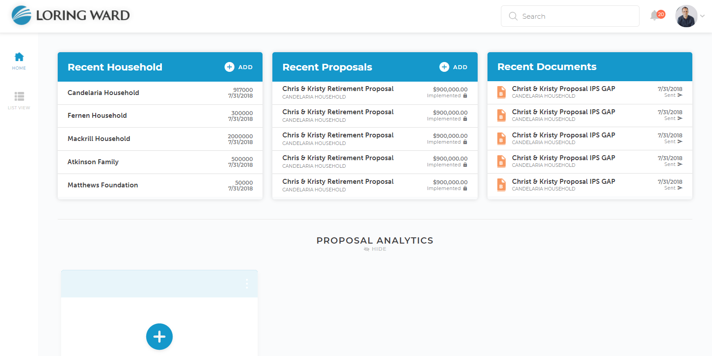
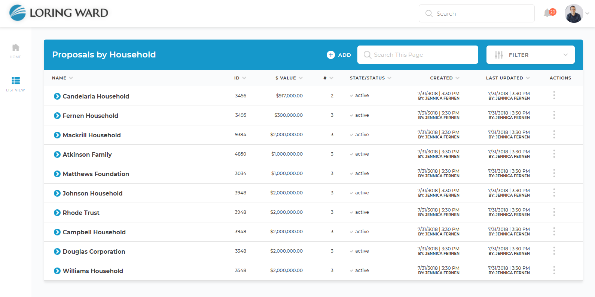

<div class="screen-container">
    <div class="overlay"></div>
    <div class="popup-container">
        <div class="popup-box">
            <div class="box-head">
                <span>Set Landing Page Default</span>
            </div>
            <div class="box-body">
                <mat-radio-group class="radio-group" [(ngModel)]="active_tab">
                <div class="left-section" [ngClass]="{checked: isChecked == 1}">
                    <div class="option" >
                        <span>Home View:</span>
                        <mat-radio-button  (click)="isChecked=1" [value]="1">Default</mat-radio-button>
                    </div>
                    <div class="img-container" >
                        
                    </div>
                </div>
                <div class="right-section" [ngClass]="{checked: isChecked==2}">
                    <div class="option" >
                        <span>List View:</span>
                        <mat-radio-button (click)="isChecked=2" [value]="2">Default</mat-radio-button>
                    </div>
                    <div class="img-container">
                        
                    </div>
                </div>
                </mat-radio-group>
            </div>
            <div class="btn-container">
                <button class="btn-cancel" (click)="closeMe()">Cancel</button>
                <button (click)="closeMe()">
                    <i class="icon-save"></i>
                    <span>Save</span>
                </button>
            </div>
        </div>
    </div>
</div>